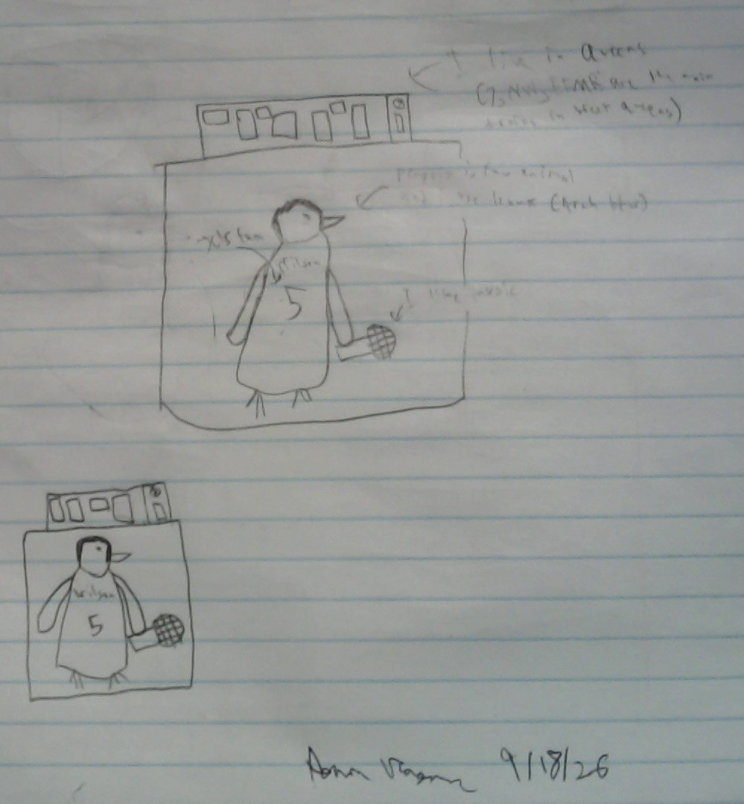

This is my logo that I drafted in September. It has a elevated train because I live in Queens and frequently take elevated lines like the 7 and N/W. There's a penguin for 2 reasons:
The penguin has a Wilson jersey because I'm a Jets fan. It's holding a microphone because I like music.